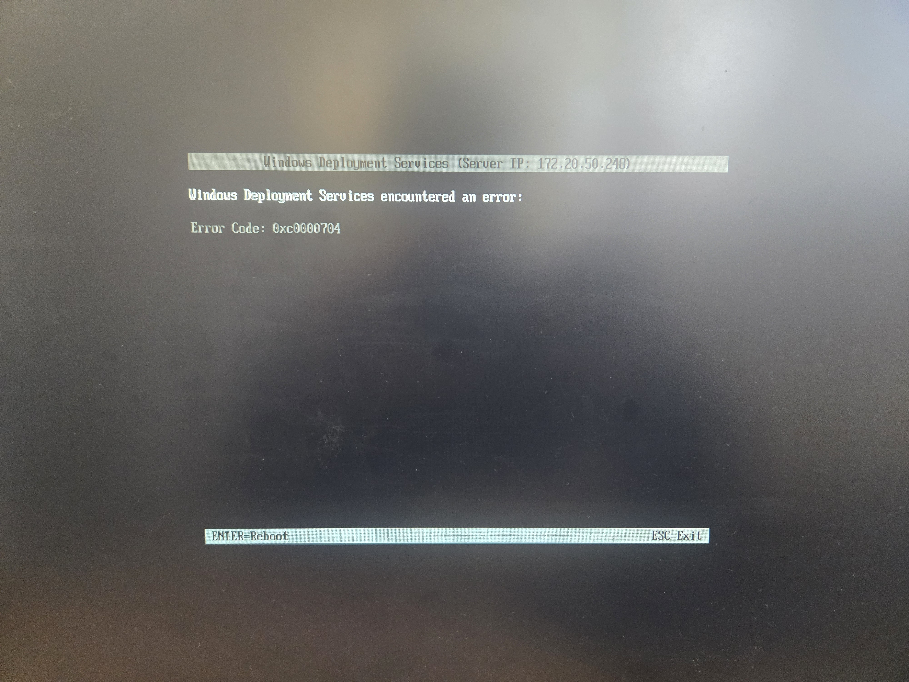

Déploiement Automatisé (WDS / MDT)
1. Contexte et Objectif
Mise en place d'une infrastructure de déploiement centralisée pour installer des environnements de travail (Windows) sur un parc de machines clientes.
Le serveur WDS (Windows Deployment Services) gère l'amorçage via le réseau (PXE). Il est couplé au MDT (Microsoft Deployment Toolkit) qui automatise entièrement le processus (Zero Touch) : injection de l'OS, pilotes, logiciels et jonction au domaine.
📄 Lire la documentation complète (Notion)2. Cahier des Charges de la Mission

4. Compétences Validées (E6)
Bloc 1 : Support et mise à disposition de services informatiques.
- ✅ Mettre à disposition un environnement
- ✅ Automatiser le déploiement
- ✅ Diagnostiquer et résoudre un incident
- ✅ Administrer des services réseau
3. Résolution d'Incidents et Déploiement


Photo 1 (Troubleshooting) : Lors des premiers tests de boot PXE, j'ai rencontré l'erreur 0xc0000704 sur l'écran WDS. J'ai diagnostiqué le problème : l'image de boot ne contenait pas les drivers de la carte réseau du poste client. Solution : Injection des bons drivers réseau dans MDT et mise à jour de l'image de boot (LiteTouchPE).
Photo 2 (Validation) : Une fois le correctif appliqué, le processus de déploiement (Task Sequence) se lance parfaitement. L'OS, les logiciels et les configurations s'installent en totale autonomie.